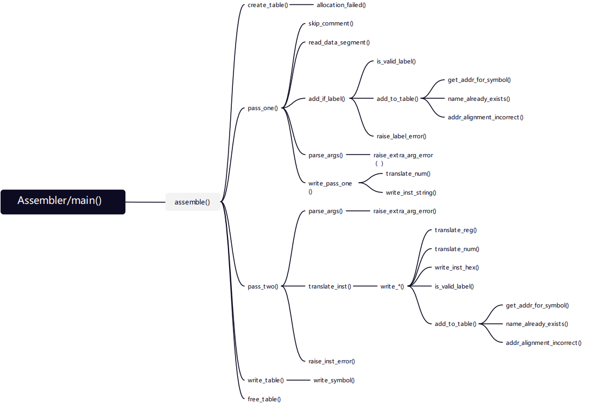

4.3 汇编器
4.3.1 汇编器原理详解
正如上文所述，汇编器将汇编语言文件翻译成二进制机器指令和二进制数据组成的文件，我们将在下文阐述MIPS汇编器的实现细节。 首先我们先来看看汇编器在处理过程中可能面临的一些情况：
- 简单情况：
- 计算和逻辑指令，例如
等；addu rd, rs, rt mult rs, rt lw rt, offset(rs)- 为将其汇编成二进制指令所需要的所有信息都已经包含在了指令中。
- 分支指令(Branch)：
- 分支指令中的
imm字段代表的是相对当前指令地址的偏移量，即需要的是相对地址； - 一旦将所有的伪指令解析成实际的机器代码以后，由于MIPS是定长指令，因此通过简单的计算我们便可以得到实际的地址偏移量。
- 分支指令中的
- 前向引用：汇编语言允许标签在定义之前就被使用，如下图所示：
beq $zero, $zero, Label
Label:
汇编器在看到指令beq时，它不知道标签Label在哪里，因此也就无从得知相对地址偏移量了。
为解决这个问题，我们首先引入一个概念——遍(Pass)。它指的是对源程序（包括源程序的中间形式）从头到尾扫描一次，并做有关的加工处理，生成新的源程序中间形式或目标程序，通常称为遍。
汇编器通常采用两遍的方式来处理可能出现的前向引用：
-
第一遍，汇编器将汇编文件的每一行读入，如果一行以标签作为开始，汇编器在他的符号表中记录标签的名字以及在文件中的位置。
-
第二遍，汇编器使用整个文件的符号表中的信息，在这一遍产生机器代码，若依然有未决的引用，将由链接器来进行解析：
-
跳转指令：例如
j, jal指令，这类跳转指令需要跳转的绝对地址，汇编器对于单一文件的操作，不可能得到最终的绝对地址。 -
数据引用：例如
la指令，la指令将由汇编器处理为lui和ori指令，同样需要32位的绝对地址。 -
外部引用：
jal指令可能跳转到外部文件的函数（就如C语言引用库函数），汇编器处理单一文件无法获取外部引用。
-
可以看到，我们对于需要绝对地址的指令以及外部引用都是无法解析的，因此汇编器将创建两张表。
-
符号定义表(Symbol Table)：每个文件都有一个符号定义表，用来记录该文件中定义的标签，这些标签可能被其他文件引用：
- 文本段标签： 1. 跳转标签，如循环时定义的 For/Loop/End 等标签； 2. 函数定义，如 main/add 等自行定义的函数；
- 数据段标签：出现在文件
.data段的数据标签。
-
重定位表(Relocation Table)：该文件中暂时无法确定的，需要在之后的过程中得到地址的标签：
j, jal等指令的跳转标签，一般都是在文本段中定义的，无论是文件内定义的还是文件以外定义的；- 任何可能的数据标签，例如所有被
la指令引用的数据标签。
4.3.2 汇编器具体实现
汇编器实现概述
本次实验，我们的汇编器将实现一个MIPS指令的子集。同时我们的汇编器是一个如上文描述的**“两遍”**汇编器，实现汇编.data和.text段。它将按照以下流程工作：
第一遍：读取输入的.s文件
举例如下：
.data
num: .space 8
num2: .space 16
.text
add:
lw $s5, -4($sp)
lw $s6, -8($sp)
addu $t0, $s5, $s6
move $v0, $t0
jr $ra
main:
la $v1, num
li $s1, 10
li $s2, 20
sw $ra, 0($a3)
sw $s1, -4($a3)
sw $s2, -8($a3)
move $sp, $a3
jal add
lw $ra, 0($sp)
move $t0, $v0
beq $t0, $0, end
j end
end:
- 剔除文件注释（在.s文件中，注释为#开头的单行注释）；
- 扩展伪指令，如
li,la等； - 记录文件符号，构建相应的符号定义表；
- 注意：在我们的处理中，为了区分符号是来自
.data段还是来自.text段，我们为来自.data段中的符号，在符号名最开始追加一个%用于在符号定义表中区分。
- 注意：在我们的处理中，为了区分符号是来自
- 标签（是否重复定义）和伪指令（是否合法）将被检查确认；
- 输出：中间文件（.int），对于
.data段，只需要输出.data段所占据的字节数即可，按照如下格式：
.data
24
.text
lw $s5 -4 $sp
lw $s6 -8 $sp
addu $t0 $s5 $s6
addu $v0 $0 $t0
jr $ra
lui $at num@Hi
ori $v1 $at num@Lo
addiu $s1 $0 10
addiu $s2 $0 20
sw $ra 0 $a3
sw $s1 -4 $a3
sw $s2 -8 $a3
addu $sp $0 $a3
jal add
lw $ra 0 $sp
addu $t0 $0 $v0
beq $t0 $0 end
j end
第二遍：读取.int中间文件
- 将指令翻译为机器代码，对于需要重定位的字段，一律进行清零处理；
- 指令语法和参数检查；
- 构建重定位表；
- 输出：目标文件（.out），其中包括数据段大小(.data)，机器代码(.text)，符号定义表(.symbol)，重定位表(.relocation)。
.data
24
.text
8fb5fffc
8fb6fff8
02b64021
00081021
03e00008
3c010000
34230000
2411000a
24120014
acff0000
acf1fffc
acf2fff8
0007e821
0c000000
8fbf0000
00024021
11000001
08000000
.symbol
0 %num
8 %num2
0 add
20 main
72 end
.relocation
20 num@Hi
24 num@Lo
52 add
68 end
注意：
- 区分
.symbol段中的标签和.relocation段中的标签，以及它们地址的区别。 - 此时无论是
.symbol段还是.relocation段，记录的地址都是标签相对于该文件的地址，即相对地址，在后续链接过程中需要转变为绝对地址。 - 你可能注意到了
num标签被扩展成了num@Hi和num@Lo，这是因为我们将伪指令la扩展成lui-ori指令对（你可以在.int文件里看到扩展结果）。
汇编指令集
汇编器支持如下的寄存器符号：
$0 - $31: $zero, $at, $v0 - $v1, $a0 - $a3, $t0 - $t9, $s0 - $s7, $k0 - $k1, $gp, $sp, $fp, $ra。
汇编器需要支持28条MIPS基本指令，和5条伪指令，如下（关于指令的详细介绍，请参考MIPS指令文档或MARS帮助文档）：
| 指令 | 格式 | 指令 | 格式 |
|---|---|---|---|
| Add | add rd, rs, rt |
Add Unsigned | addu rd, rs, rt |
| Sub | sub rd, rs, rt |
Sub Unsigned | subu rd, rs, rt |
| Mult Unsigned | multu rs, rt |
Divide Unsigned | divu rs, rt |
| Set Less Than | slt rd, rs, rt |
Set Less Than Unsigned | sltu rd, rs, rt |
| Or | or rd, rs, rt |
Shift Left Logical | sll rd, rt, shamt |
| Jump Register | jr rs |
Add Immediate Unsigned | addiu rt, rs, imm |
| Load Upper Immediate | lui rt, imm |
Or Immediate | ori rt, rs, imm |
| Store Byte | sb rt, offset(rs) |
Store Word | sw rt, offset(rs) |
| Load Byte | lb rt, offset(rs) |
Load Byte Unsigned | lbu rt, offset(rs) |
| Load Word | lw rt, offset(rs) |
Syscall | syscall |
| Branch on Equal | beq rs, rt, label |
Branch on Not Equal | bne rs, rt, label |
| Jump | j label |
Jump and Link | jal label |
Move From $lo |
mflo rd |
Move From $hi |
mfhi rd |
| And | and rd, rs, rt |
Syscall | syscall |
| 伪指令 | 格式 |
|---|---|
| Load Immediate | li rt, imm |
| Move | move rd, rs |
| Branch if greater than | bgt rs, rt, label |
| Branch if less than | blt rs, rt, label |
| Load address | la rt, label |
注意：
- 本地调试时，请使用汇编链接器支持的指令及指令格式，否则无法被识别可能会导致错误。
- 我们在实现某些指令时做了简化处理，因此结果和MARS汇编得到的结果可能不完全一样。
汇编器支持.data段如下声明：
Label: .space number_of_bytes
汇编器实现
汇编器整体调用关系如下：

在上文中我们说明了汇编器是如何构建符号定义表和重定位表的，在我们的汇编器中也定义了与之相对应的数据结构，它是我们实现构建查找符号表的基础：
typedef struct {
Symbol *tbl; // 符号数组
uint32_t len; // 符号表长度，即tbl中当前存在的符号数目
uint32_t cap; // 符号表当前最大容量
int mode; // 符号表模式
} SymbolTable; // 相当于手动实现的Vector
每个符号用一个Symbol结构体表示：
typedef struct {
char *name; // 符号名称
uint32_t addr; // 符号在该文件中的相对偏移量（以字节为单位）
} Symbol;
符号表共有两种模式，分别对应符号定义表和重定向表，也定义在table.h中：
SYMTBL_NON_UNIQUE：允许名称重复出现在符号表中（符号在跳转或加载地址等指令中可以出现多次，即多次被引用）；SYMTBL_UNIQUE_NAME：不允许名称重复出现在符号表中（符号定义只能有一个）。
为了简化实验步骤，我们提供了整体汇编器框架及部分汇编器源文件，大家只需要实现部分函数，但是为了便于理解，还请大家通读一遍程序(相关程序为 assembler.c, lib/*.h, lib_assembler/*.h)，各个源文件都提供了详尽的注释说明。
所有需要你完成的函数都已经声明在my_assembler_utils.h文件中，并提供了详细的注释解释。对应的函数请在my_assembler_utils.c中实现，最终仅提交my_assembler_utils.c文件即可。
汇编器代码提交
在完成my_assembler_utils.h文件中声明的所有函数以后，就可以提交my_assembler_utils.c。